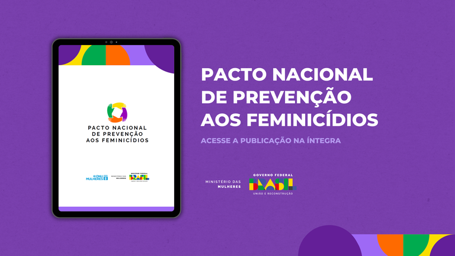

PREVENÇÃO À VIOLÊNCIA
Elaborada em parceria com a ONU Mulheres, publicação apresenta os eixos, as diretrizes e o modelo de governança do Pacto, que já conta com a adesão de 20 estados.

O Ministério das Mulheres, em parceria com a ONU Mulheres, apresenta a cartilha do Pacto Nacional de Prevenção aos Feminicídios, instituído pelo Decreto nº 11.640/2023. O Pacto tem o objetivo de prevenir todas as formas de discriminação, misoginia e violência de gênero contra mulheres e meninas, por meio da implementação de ações governamentais intersetoriais, com a perspectiva de gênero e suas interseccionalidades. A ação já conta a adesão de 20 estados e o Distrito Federal, que firmaram a parceria com o MMulheres durante o Encontro com Gestoras Estaduais de Políticas para as Mulheres.
Dividida em quatro partes, a cartilha traz o contexto do problema da violência contra as mulheres e meninas no Brasil, apresentando um panorama histórico das políticas de enfrentamento à violência de gênero e uma reflexão sobre os paradigmas da prevenção. Também são apresentados os Objetivos, Diretrizes e Princípios do Pacto Nacional de Prevenção aos Feminicídios, bem como seu Modelo de Governança.
O Pacto Nacional de Enfrentamento aos Feminicídios é uma ferramenta de articulação e operacionalização dos objetivos, diretrizes e princípios constantes da Política Nacional de Enfrentamento à Violência contra as Mulheres, a partir da adesão de estados e municípios e a participação do conjunto da sociedade. Com orçamento previsto de R$ 2,5 bilhões, o Plano de Ação do Pacto, lançado em março de 2024, contém **73 ações voltadas à prevenção da violência envolvendo as áreas da saúde, educação, cultura, justiça e segurança.
As ações são deliberadas pelo Comitê Gestor do Pacto, com a coordenação do Ministério das Mulheres, por meio da Secretaria Nacional de Enfrentamento à Violência contra Mulheres (Senev), e a participação de representantes da Casa Civil e de outros 10 ministérios, além da ONU Mulheres. Eles são: Ministério da Justiça e Segurança Pública (MJSP), Ministério do Desenvolvimento e Assistência Social, Família e Combate à Fome (MDS), Ministério da Saúde, Ministério da Educação (MEC), Ministério da Gestão e da Inovação em Serviços Públicos (MGI), Ministério do Planejamento e Orçamento (MPO), Ministério da Igualdade Racial (MIR), Ministério dos Povos Indígenas (MPI) e Ministério dos Direitos Humanos e da Cidadania (MDHC).